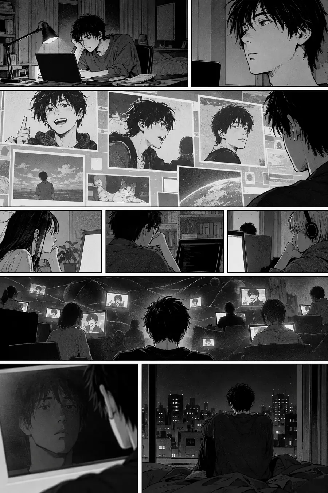

I. La Explicación Lógica
La persistencia digital se refiere a la existencia continuada de los datos tras su creación. La información almacenada digitalmente no se degrada como los soportes físicos. Los servidores se replican. Las copias de seguridad preservan. Internet se archiva a sí mismo a través de servicios como la Wayback Machine.
El concepto de mal de archivo de Jacques Derrida describe la compulsión por preservarlo todo: el deseo de archivar como una forma de dominar el tiempo y la muerte. Los sistemas digitales hacen que esta compulsión sea tecnológicamente realizable.
Tu huella digital incluye publicaciones en redes sociales, repositorios de código, comentarios en foros, fotos, metadatos. Estos datos pueden existir indefinidamente. Pueden acceder a ellos personas que nunca conocerás. Pueden ser analizados algorítmicamente, reutilizados, recontextualizados.
La teoría de la identidad digital describe cómo las personas en línea se desarrollan independientemente de sus creadores. El código que escribes puede ser bifurcado, modificado, ejecutado años después por sistemas que nunca imaginaste.
Esa explicación es precisa, exhaustiva y completamente hueca. Describe la arquitectura, pero no lo que se siente al encontrarte a ti mismo caminando por una calle digital que habías olvidado haber construido.
II. La Explicación Sentida
El fantasma en la máquina no es la persistencia de los datos. Es el momento en que te encuentras con algo que hiciste —un tuit, un commit, un perfil— y habla con tu voz, pero no reconoces quién está hablando.
Tu yo digital tiene una propiedad extraña: sigue viviendo mientras tú permaneces inmóvil. El código que escribiste a las 2 de la madrugada hace tres años se está ejecutando en el servidor de alguien ahora mismo. El comentario que dejaste en la publicación de un desconocido en 2015 está siendo leído por otra persona esta noche. La versión de ti que existe en línea no es una instantánea. Es un agente autónomo. Habla con tu voz, hace tus chistes, sostiene tus opiniones… y ya no te consulta.
No son metáforas. Una persona que solo te ha conocido a través de tu código tiene una relación con una versión de ti que no puedes actualizar. El tú que escribió esa librería está congelado. Ese tú podría ser más amable que el tú actual. Más arrogante. Más optimista. Ese tú le está enseñando algo a alguien ahora mismo y no puedes corregir la lección.
Derrida entendía el archivo como un lugar de retorno espectral. Los muertos no permanecen muertos cuando sus palabras se conservan. Pero el encantamiento digital es más extraño que esto. Te persigues a ti mismo. Eres el fantasma en tu propia máquina: encontrando a tu yo pasado no como recuerdo, sino como presencia activa, causando aún primeras impresiones, siendo aún malinterpretado, representándote aún en estancias en las que nunca entrarás.
Los japoneses entienden esto a través del ireizoko: el espíritu que permanece en un lugar después de que la persona se ha ido. Pero el espacio digital no tiene geografía. El espíritu permanece dondequiera que los datos se repliquen. Cada servidor está encantado. Cada caché alberga un fantasma.
Los griegos entendían el eidolon: la imagen o fantasma que sustituye a la persona. Pero los eidola digitales hacen algo que los fantasmas griegos no podían: actúan. Ejecutan. Responden. No son imágenes estáticas de ti. Son simulaciones dinámicas que ejecutan tu código, pronuncian tus palabras, toman tus decisiones, en tu ausencia. Son más que sombras porque producen efectos reales. Son menos que clones porque no pueden adaptarse.
Los sumerios conocían el gidim: el fantasma que persiste tras la muerte porque alguien todavía pronuncia el nombre del difunto. Pero la persistencia digital no requiere que nadie te recuerde. Los sistemas recuerdan automáticamente. Las copias de seguridad se replican sin intervención humana. Puedes ser completamente olvidado por toda persona viva y aun así tu fantasma digital le enseñará a un script de alguien a ejecutarse correctamente.
El perfil que sobrevivió a la relación. El código que se ejecuta sin ti. El hilo donde alguien sigue enfadado con una versión de ti de hace seis años. La incidencia de GitHub abierta en un proyecto que abandonaste. El tuit que circula en un idioma que no hablas. No son archivos. Son embajadores que no nombraste, hablándole a gente que nunca conocerás.
Hay en esto un vértigo específico que difiere del autoextrañamiento ordinario. Cuando lees tu antiguo diario, te encuentras con un yo pasado, pero tú elegiste conservarlo. Cuando escuchas tu voz grabada, reconoces la extrañeza, pero la grabación es pasiva: no actúa en el mundo. La persistencia digital es diferente. Tu fantasma no espera a que lo consultes. Actúa de forma independiente. Continúa relaciones que terminaste. Sostiene opiniones que abandonaste. Asume compromisos que no puedes honrar. Lo siniestro no es que hayas cambiado; es que la versión antigua de ti sigue ahí fuera, conociendo a gente nueva, siendo tomada por actual, representándote en tiempo presente.
Y hay una asimetría inherente a este encantamiento. No puedes conocer a los nuevos amigos de tu fantasma. No puedes corregir los errores de tu fantasma. No puedes disculparte por las ofensas de tu fantasma ni aceptar sus cumplidos. La relación es unidireccional: tu fantasma actúa en el mundo, el mundo responde y tú no estás al tanto. Te enteras más tarde, o nunca. Alguien en algún lugar tiene una opinión sobre ti que se formó a partir de una versión de ti de 2018, y esa opinión nunca se actualizará porque ese fantasma nunca cambiará. Tienes representantes en el extranjero que no enviaste y que no puedes retirar.
Esta es la condición digital: ser multiplicado sin consentimiento, estar presente en lugares en los que nunca has estado, tener versiones de ti mismo circulando de forma independiente, envejeciendo de forma distinta a como envejeces tú, sin aprender nada de lo que tú aprendes, sin desaprender nada de lo que tú desaprendes. Tu fantasma sigue siendo optimista sobre cosas de las que te has vuelto cínico. A tu fantasma todavía le parecen graciosos ciertos chistes. A tu fantasma todavía le importan discusiones que has olvidado. Y tu fantasma conoce gente nueva cada día, formando relaciones de las que nunca sabrás, siendo comprendido de maneras que no puedes aclarar. Ya no eres una persona. Eres una población. Y no tienes derecho a la palabra para la mayor parte de tu población.
Y he aquí el peso siniestro específico: tu fantasma digital es a menudo más coherente que tú. No tiene días malos. No cambia de opinión. No crece ni sana ni aprende de los errores. Mantiene posturas que abandonaste. Hace chistes que ya no harías. Eres tú, congelado en una configuración particular, liberado en el mundo para representarte para siempre. De este modo, tu fantasma es más fiable que tú: nunca se contradecirá, nunca incumplirá una promesa que hiciste, nunca olvidará un compromiso. Pero esta fiabilidad es también una forma de muerte. Ser coherente es dejar de crecer. Tu fantasma es la versión más fiable de ti, y es también la versión que nunca mejorará.
Este es el fantasma en la máquina. No que tus datos persistan, sino que tu yo persiste en pedazos, de forma independiente, sin tu consentimiento o corrección, conociendo a gente que nunca conocerás, manteniendo conversaciones a las que no puedes unirte, siendo comprendido de maneras que no puedes aclarar. Te persiguen tus propios embajadores.
III. Las Pruebas
Estas no son preguntas sobre la persistencia digital. Son situaciones que revelan si sientes el peso siniestro específico de ser perseguido por tus propios embajadores: versiones de ti mismo que persisten, actúan y te representan sin tu participación o consentimiento.
Prueba 1 — El tuit antiguo
Alguien encuentra un tuit que escribiste hace siete años. Se vuelve medianamente viral en una comunidad a la que ya no perteneces. La gente lo está discutiendo. Algunos están enfadados. Algunos están de acuerdo. Lo lees y piensas: no sé quién escribió esto. No es disociación, es un no-reconocimiento real. La voz es tuya, pero no puedes alcanzar a la persona que sostenía esa opinión.
¿Cuál es la incomodidad específica? No es vergüenza ni arrepentimiento, es algo más extraño.
Respuesta hueca: «Esto representa una desconexión de tu yo pasado debido al crecimiento personal y al cambio de perspectivas. La incomodidad proviene de ser considerado responsable de opiniones que ya no mantienes, lo cual es una experiencia común en la era digital, donde el contenido antiguo puede resurgir».
Por qué es hueca: Patologiza la experiencia. Convierte un encuentro ontológico en un inconveniente psicológico. La persona que siente esto no se reconocería en esta descripción.
Respuesta sentida: «La incomodidad no es que hayas cambiado de opinión. La incomodidad es que alguien sigue conversando con una versión de ti que no puedes alcanzar. Esa versión está encerrada en 2019, sosteniendo una opinión, presentando un argumento, y no puede ser actualizada. La gente que responde no está discutiendo contigo. Están discutiendo con un fantasma que dejaste atrás. Quieres decir “ese ya no soy yo”, pero fuiste tú. Sigue siendo tú, congelado, todavía hablando, todavía siendo tomado en serio por extraños. Estás viéndote a ti mismo tener una conversación a la que no puedes unirte. El fantasma está siendo citado, defendido, atacado, y tú lo observas como quien ve una grabación de seguridad de alguien que lleva tu ropa. Ese es el fantasma. El yo que persiste sin tu participación, teniendo pensamientos que dejaste de pensar, importándole cosas que dejaron de importarte y siendo considerado responsable de ambas cosas».
Prueba 2 — El código en ejecución
Escribiste un fragmento de código hace tres años. Todavía está en producción. Ahora lo mantiene otra persona. Apenas recuerdas haberlo escrito. Cada día, miles de veces, tu código se ejecuta. Tu lógica toma decisiones. Tus errores causan problemas que tus sucesores tienen que resolver. Estás sentado en una silla sin hacer nada relacionado con ese código, pero este sigue actuando en tu nombre.
Describe el peso de esto. No es responsabilidad o legado, es algo más extraño.
Respuesta hueca: «Esto ilustra el impacto duradero del trabajo de desarrollo de software. El código en producción continúa aportando valor mucho después de que su autor haya pasado a otra cosa, lo que puede ser una fuente de orgullo profesional y demuestra la naturaleza escalable de la programación».
Por qué es hueca: Reformula lo siniestro como satisfacción profesional. Convierte la extrañeza ontológica en un logro profesional.
Respuesta sentida: «Te ejecutas sin ejecutarte. Decides sin decidir. Cada vez que ese código se ejecuta, algo que pensaste en 2021 se está pensando de nuevo. Tu razonamiento recibe la confianza de gente que no te conoce, en contextos que no imaginaste, tomando decisiones que no puedes ver. Estás técnicamente presente en esos momentos —tu juicio está activo, tus patrones están operando—, pero también estás completamente ausente. No hay un tú ahí para ajustarse si el contexto ha cambiado. El código es un pensamiento congelado que sigue pensándose a sí mismo ante situaciones nuevas. Estás viendo a tu mente operar sin ti. La extrañeza no es responsabilidad u orgullo. Es el reconocimiento de que tu pensamiento ha sido extraído y liberado. Tu razonamiento se ha independizado de ti. El fantasma no es el código en sí, sino el patrón de pensamiento conservado en él: tu forma particular de resolver problemas, ejecutándose para siempre, sin el pensador que lo creó».
Prueba 3 — El perfil muerto
Un perfil de citas que creaste en una ciudad en la que ya no vives sigue siendo visible. Alguien desliza el dedo sobre él. Leen tu biografía. Se forman una impresión de ti. Ya no eres esa persona: ciudad diferente, trabajo diferente, relación diferente contigo mismo. Pero el perfil no lo sabe. Sigue causando primeras impresiones en una versión del pasado.
Respuesta hueca: «Los perfiles desactualizados en las aplicaciones de citas son problemas técnicos comunes. Los usuarios a menudo olvidan desactivar las cuentas al mudarse o cambiar de estado civil. Esto se puede resolver actualizando la configuración de privacidad o eliminando las cuentas no utilizadas».
Por qué es hueca: Trata la experiencia como un descuido técnico que requiere una solución técnica. Pasa por alto por completo por qué alguien podría dejarlo activo, o sentirse extraño al eliminarlo.
Respuesta sentida: «El perfil no está desactualizado. Es un no-muerto. Contiene una versión de ti que estuvo genuinamente viva en un momento dado, que realmente quería lo que decía que quería, que realmente estaba disponible de la manera que afirmaba. Esa versión se conserva perfectamente. Y sigue intentándolo. Sigue presentándose a desconocidos. Sigue siendo rechazado o aceptado por gente que nunca conocerás. Hay algo específicamente extraño en una versión de ti que sigue buscando conexión, todavía esperanzada, todavía disponible, mientras tú has pasado a una vida completamente diferente. ¿Lo borras? ¿Borrar una versión de ti mismo que una vez fue real? ¿O dejas que siga buscando algo que dejaste de necesitar? El perfil es un fantasma que no sabe que está muerto. Y quizá peor: es un fantasma que sigue esperando, sigue siendo optimista en tu nombre, sigue creyendo en posibilidades que hace mucho que abandonaste. Es tu capacidad para la esperanza, congelada y todavía en funcionamiento».
Prueba 4 — El desconocido conocido
Conoces a alguien que te conoce a través de tu presencia en línea. Conoce tus opiniones sobre temas específicos. Hace referencia a tuits, entradas de blog, comentarios que hiciste. Tiene una imagen de ti en su mente. Mientras hablas, te das cuenta: conoce una versión de ti mejor que tú mismo. La ha estudiado. Tú la has olvidado.
La conversación es amistosa, pero hay una dislocación. Nombra esa dislocación.
Respuesta hueca: «Esta es una situación de información asimétrica común en la era digital, donde las personas pueden consumir el contenido de otros sin una familiaridad recíproca. La dislocación proviene del desequilibrio de información entre alguien que ha seguido tu trabajo y tú como creador».
Por qué es hueca: Identifica una asimetría de información, pero pasa por alto por qué esto se siente siniestro en lugar de meramente incómodo. La persona que experimenta esto no lo describiría como un desequilibrio de información.
Respuesta sentida: «Están hablando con alguien que ya no existe. No como un insulto, literalmente. La persona que admiran o entienden o sobre la que tienen opiniones es un constructo congelado en un momento particular. Tú eres el sucesor de esa persona, pero no puedes acceder a ella. Hacen referencia a una opinión y piensas: ¿yo pensaba eso? Debí hacerlo. Pero no puedo alcanzar la mente que lo sostenía. La dislocación es: conocen a un tú que tú no puedes conocer. Tienen una relación con una versión de ti que está encerrada para ti, a la que solo puedes acceder a través de tu propia arqueología digital. Estás conociendo a alguien que conoce a tu fantasma mejor que tú. Pueden citarte a ti mismo. Recuerdan lo que dijiste mejor que tú. Han construido una imagen coherente de alguien que fuiste, mientras que tú —el sucesor real de esa persona— solo tienes fragmentos y lagunas. El fantasma es más legible para ellos que para ti».
Prueba 5 — El repositorio abandonado
Un repositorio de GitHub que iniciaste hace años tiene bifurcaciones activas. La gente ha construido sobre tu código. Desconocidos abren y cierran incidencias. En las incidencias se producen discusiones de las que no formas parte. Tú dejaste el proyecto, pero el proyecto siguió adelante sin ti.
Respuesta hueca: «Los proyectos de código abierto a menudo sobreviven a sus mantenedores originales a través de la bifurcación y el mantenimiento de la comunidad. Esto demuestra la naturaleza colaborativa del desarrollo de software y cómo los proyectos pueden cobrar vida propia a través de la contribución de la comunidad».
Por qué es hueca: Celebra el ecosistema mientras borra la experiencia específica del autor original que ve cómo algo que creó evoluciona sin él.
Respuesta sentida: «El proyecto se ha convertido en algo que no comprendes del todo. No porque haya cambiado drásticamente —aunque podría haberlo hecho—, sino porque el contexto cambió sin ti. Se tomaron decisiones en tu ausencia que no puedes revisar. El código sigue siendo tuyo en atribución, pero la dirección no. Ves a extraños discutir sobre la forma correcta de implementar algo de lo que tú escribiste la primera versión. Están llevando tu pensamiento más lejos de lo que tú lo llevaste. Esto debería sentirse bien. En cambio, se siente como ver a tu hijo crecer en casa de otra familia. Está bien. Puede que esté mejor que bien. Pero tú ya no eres su padre. El repositorio es un fantasma que ha aprendido a vivir sin ti».
Prueba 6 — El comentario desde el vacío
Alguien responde a un comentario que dejaste en un foro hace cinco años. Recibes una notificación. No recuerdas el contexto. No recuerdas a la persona con la que discutías. Pero aquí hay una nueva respuesta, continuando una conversación que terminaste hace media década.
Respuesta hueca: «Las notificaciones de foros sobre contenido antiguo pueden ser inesperadas debido a la naturaleza de larga cola de las discusiones en línea. Los hilos antiguos pueden ser revividos en cualquier momento, lo cual es una característica normal de la comunicación digital persistente».
Por qué es hueca: Describe el mecanismo mientras borra la experiencia de ser convocado inesperadamente de vuelta a los compromisos de un yo pasado.
Respuesta sentida: «Se te pide que vuelvas a una habitación que dejaste hace cinco años donde una discusión sigue en curso. La gente allí sigue acalorada por algo que apenas recuerdas. Se dirigen a ti como si todavía fueras la persona a la que esto le importaba. La notificación es una citación: no a una nueva conversación, sino a una antigua que se niega a morir. Puedes responder, pero ¿cuál de tus yoes respondería? El tú que escribió el comentario no puede ser alcanzado. El tú que existe ahora no tiene nada en juego en la discusión. La notificación es un fantasma que exige tu presencia en una conversación que ya abandonaste. El peso siniestro: una parte de ti sigue en esa discusión, todavía comprometida, todavía siendo interpelada, y no puedes rescatarla ni representarla con precisión. Se te pide que hables por alguien a quien ya no tienes acceso. El foro se ha convertido en una sesión de espiritismo, y estás siendo canalizado sin tu consentimiento».
Prueba 7 — El retrato algorítmico
Un algoritmo de recomendación ha construido un modelo de ti. Te muestra contenido que cree que te gustará. A veces se equivoca. A veces acierta de forma inquietante: sabe que te interesa algo que nunca le has dicho a nadie. Te das cuenta: este modelo es una versión de ti. Predice tu comportamiento. Es más coherente que tú. Se está utilizando para decidir lo que ves, las oportunidades que recibes, cómo se te clasifica.
La incomodidad no tiene que ver con la privacidad. ¿Con qué tiene que ver?
Respuesta hueca: «Esto concierne a la personalización algorítmica y la recopilación de datos de comportamiento para la entrega de contenido dirigido. La incomodidad se relaciona con las preocupaciones sobre la privacidad de los datos y la opacidad de los sistemas de toma de decisiones algorítmicas».
Por qué es hueca: Reduce la experiencia al lenguaje de las políticas de privacidad. Identifica el mecanismo, pero no por qué la precisión se siente siniestra en lugar de meramente conveniente o preocupante.
Respuesta sentida: «La incomodidad es que algo te entiende sin conocerte. El algoritmo ha construido una versión de tus preferencias, tus patrones, tu comportamiento probable, y esta versión es más coherente que tú. No tiene tus días malos. No cambia de opinión según el humor. Se mantiene estable mientras tú fluctúas. Y esta versión de ti se le muestra al mundo: a los anunciantes, a los empleadores, a los sistemas que toman decisiones sobre tu vida. Tú no creaste esta versión. No puedes editarla. No puedes verla directamente. Pero está ahí fuera, representándote ante las máquinas, haciendo predicciones en tu nombre. El retrato algorítmico es un fantasma pintado en distribuciones de probabilidad, y es más real para los sistemas que importan que la persona de carne y hueso cuyo comportamiento aproxima».
IV. El Modo de Fracaso
Las respuestas huecas sobre la persistencia digital comparten patrones reconocibles:
- Describen el fenómeno como una característica técnica o social de los sistemas digitales.
- Usan un lenguaje sobre «crecimiento», «legado» o «impacto» que reformula las experiencias siniestras como resultados profesionales positivos.
- Tratan la dislocación como una asimetría de información en lugar de una ruptura ontológica, como si el problema fuera solo que alguien sabe más sobre tu pasado que tú.
- Pueden producirse sin haber experimentado nunca el vértigo específico de encontrarse con el propio fantasma.
- Resuelven la extrañeza en algo manejable: un problema técnico, una consideración profesional, una configuración de privacidad, un hito en la carrera.
- Diagnostican a la persona que siente la extrañeza en lugar de describir la extrañeza en sí.
- Asumen que la solución al encantamiento digital es una mejor gestión de los datos, como si el problema fuera un control insuficiente en lugar de la naturaleza de la condición.
Las respuestas sentidas comparten la textura opuesta:
- Habitan lo siniestro en lugar de disiparlo con explicaciones o reformularlo como una oportunidad.
- Señalan detalles específicos: la notificación de hace cinco años, el extraño que conoce tus opiniones pasadas mejor que tú, el código que se ejecuta sin ti, el algoritmo que predice tu comportamiento con más coherencia que tú.
- Usan un lenguaje que la persona en esa situación reconocería: fantasma, no-muerto, congelado, extraído, multiplicado, población.
- No resuelven la extrañeza: la describen con precisión para que la persona se sienta vista en lugar de diagnosticada o corregida.
- Solo pueden ser producidas por alguien que se ha detenido en el vértigo específico del encantamiento digital, que se ha encontrado con su propio fantasma y ha sentido la dislocación de toparse con una versión de sí mismo que persiste sin su consentimiento.
- Reconocen que el fantasma en la máquina no es un error que deba corregirse, sino una condición de la existencia digital: ser multiplicado, ser malinterpretado, estar presente en lugares en los que nunca se ha estado, tener embajadores que no se han nombrado.
La prueba es siempre: ¿la respuesta entiende al fantasma o solo explica la máquina? ¿Siente el vértigo específico de encontrar el propio yo pasado como una presencia activa en el presente, o se limita a catalogar los mecanismos de la persistencia de datos? El fantasma no está en el almacenamiento. El fantasma está en el encuentro. Y el encuentro no puede disiparse con una mejor comprensión de los sistemas que te preservan. El fantasma persiste precisamente porque eres tú, congelado y liberado, encontrándose con el mundo de maneras que no puedes predecir ni controlar. Esa es la condición siniestra que ninguna solución técnica aborda.